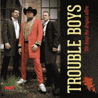

Trouble Boys - We Keep The Drapes Alive (Album, 2012)
01 - Marie, Marie (4:30)
02 - Blue Days (2:30)
03 - Love My Baby (2:12)
04 - Get Drunk (2:45)
05 - Rockabilly Special (1:57)
06 - Bop A Billy Girl (2:04)
07 - Pain And Insane (1:59)
08 - Hey Tina (2:31)
09 - Judy (4:54)
10 - Last Night I Dreamed About Elvis (3:16)
11 - We Keep The Drapes Alive (2:16)
12 - Teddy Girl (2:43)
13 - Need Your Love (2:11)
14 - Tonight (3:04)
15 - Crazy Tracy (2:58)
16 - Have Some Fun (2:32)
17 - Blue Blue Heart (5:27)
© Part Records :: [6106.001]
Notes
Norway.
Håkon Samland - Vocals, Guitar
Mads Mikkelsen - Bass
Stein-Erik Reiten - Drums
reference information: Discogs®
Review
364/366 (Project 366)
Norwegian Rockabilly in the tradition of Teencats and Rebels Revenge. Also, just fine and groovy Teddy Boy Rock'n'Roll with all original tracks. Loud sound, crazy rhythm and screeching guitars. And sometimes melodious sentiments of love and about women. Lively vocals, sometimes nice female backing vocals. Lively vocals, sometimes nice. In addition, there are certainly standards of the traditions described above, as well as just some fresher feeling of something inspired.